（1）参考文档
https://vuex.vuejs.org/zh/
（2）vuex指的是一种状态管理模式，集中式管理所有组件的状态。可以将其理解为一个数据仓库，用来集中式存储管理数据。
（3）单向数据流
State：指的就是状态
View：以声明的方式将 state 映射到视图（比如 {{msg}}）。
Actions：指的就是响应动作。
简单的理解就是， view 映射 state 到 视图上， 状态发生变化时，触发 Actions，Actions执行完后，更新 state。
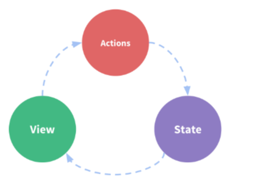
没使用vuex前，组件间通信处理比较麻烦。
如下图，五个组件，D是B的子组件，E是C的子组件，B、C是A的子组件。现需要D和E组件间传递数据，则需要通过A、B、C三个组件来进行中转，如果出现更多的组件嵌套，那么逻辑可能会很复杂。
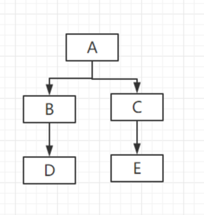
如果可以将这个数据放在某个特定的地方，需要用的时候直接去拿，不用通过组件的嵌套传值获得，那么会很方便，可以理解vuex就是为了解决这个问题而诞生的。
（1）小型应用不建议使用，使用的话可能会比较繁琐。
（2）中型、大型单页应用，推荐使用，可以更好地管理组件状态。
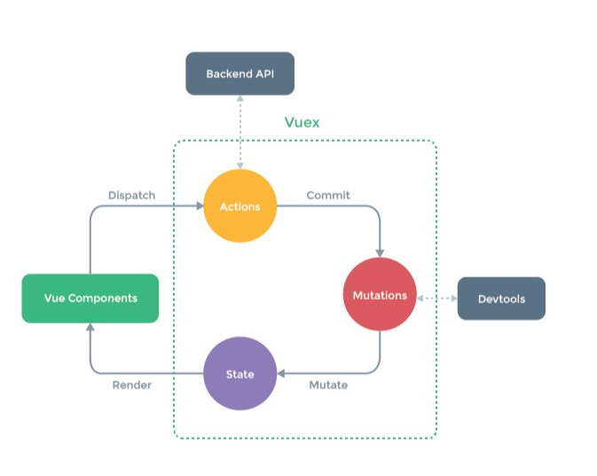
（1）指的是vuex管理的状态对象。
（2）应该是唯一的。
【形如：】
state ： {
xxx : initValue // 某个数据的状态
}
（1）指的是vuex更新state的动作。
（2）包含多个直接更新 state 的方法（回调方法） 的 对象。只能包含同步方法。
【形如：】
mutations: {
xxx(state) {
// 变更状态
state.xxx
}
}
（1）类似于 Mutations，只是Actions 提交的是 Mutation，而不是直接更新 state。其可以包含异步操作。
【形如：】
actions: {
xxx(context) {
commit('xxx')
}
}
（1）可以理解为计算属性。getter 的返回值会根据它的依赖被缓存起来，且只有当它的依赖值发生了改变才会被重新计算。
【形如：】
getters: {
xxx: state => {
return state.xxx
}
}
（1）安装vuex
npm install vuex --save
（2）引入并映射store
import vuex from 'vuex'
import store from './store'
Vue.use(vuex)
new Vue({
store
})
（3）声明一个 Store对象。里面需要包含上述几个属性。
【形如：】
const store = new Vuex.Store({
state: {
},
getters: {
},
mutations: {
},
actions: {
}
})
（1）功能需求：实现一个简单的加减数的功能。如下图：四个按钮，
“+”表示 加1， "-"表示 减1，
"oddAdd"表示只在奇数时加1，"asyncAdd"表示异步的加1（延迟1秒）。
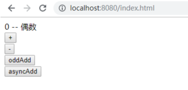
（2）代码实现
目录结构：
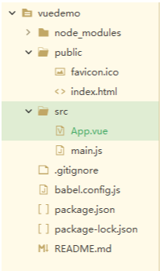
【main.js】
import Vue from 'vue'
import App from './App.vue'
Vue.config.productionTip = false
new Vue({
render: h => h(App),
}).$mount('#app')
【App.vue】
<template>
<div>
{{count}} -- {{addCount}}
<br/>
<button @click="increase">+</button>
<br/>
<button @click="decrease">-</button>
<br/>
<button @click="oddAdd">oddAdd</button>
<br/>
<button @click="asyncAdd">asyncAdd</button>
</div>
<!--App -->
</template>
<script>
export default {
data() {
return {
count: 0
}
},
computed:{
addCount(){
return (this.count + 2)%2 == 0 ? '偶数' : '奇数';
}
},
methods: {
increase() {
return ++this.count;
},
decrease() {
return --this.count;
},
oddAdd() {
return this.count%2 == 0 ? this.count : ++this.count;
},
asyncAdd() {
setTimeout(() => ++this.count, 1000);
}
}
}
</script>
<style>
</style>
（3）测试截图：
初始画面
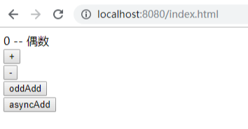
点击+
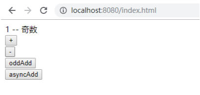
点击 oddAdd
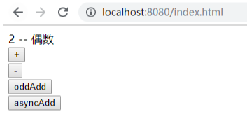
再次点击 oddAdd，值不改变。
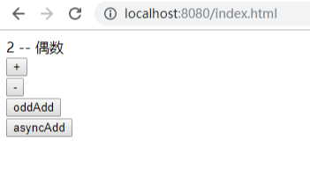
点击 -
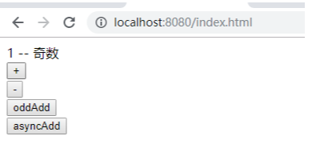
点击 asyncAdd
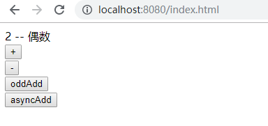
（1）目录结构：
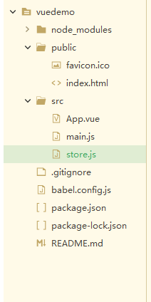
（2）代码
【安装vuex】
npm install --save vuex
【store.js】
// 引入组件
import Vue from 'vue'
import Vuex from 'vuex'
// 使用组件
Vue.use(Vuex)
const state = {
count : 0
}
const mutations = {
INCRERASE(state){
state.count++;
},
DECRERASE(state){
state.count--;
}
}
const actions = {
increase({commit, state}) {
commit('INCRERASE')
},
decrease({commit, state}) {
commit('DECRERASE')
},
oddAdd({commit, state}) {
if(state.count%2 != 0){
commit('INCRERASE')
}
},
asyncAdd({commit, state}) {
setTimeout(() => commit('INCRERASE'), 1000);
}
}
const getters = {
addCount(state){
return (state.count + 2)%2 == 0 ? '偶数' : '奇数';
}
}
// 向外抛出实例对象
export default new Vuex.Store({
state, // 状态对象
mutations, // 包含多个更新state函数的对象
actions, // 包含多个回调事件的对象
getters // 包含多个计算属性的对象
})
【main.js】
import Vue from 'vue'
import App from './App.vue'
import store from './store.js'
Vue.config.productionTip = false
new Vue({
store: store, // 注册 store
render: h => h(App),
}).$mount('#app')
【App.vue】
<template>
<div>
{{$store.state.count}} -- {{addCount}}
<br/>
<button @click="increase">+</button>
<br/>
<button @click="decrease">-</button>
<br/>
<button @click="oddAdd">oddAdd</button>
<br/>
<button @click="asyncAdd">asyncAdd</button>
</div>
<!--App -->
</template>
<script>
export default {
computed:{
addCount(){
// 此处不要写成 this.$store.getters.addCount()
return this.$store.getters.addCount;
}
},
methods: {
increase() {
this.$store.dispatch('increase');
},
decrease() {
this.$store.dispatch('decrease');
},
oddAdd() {
this.$store.dispatch('oddAdd');
},
asyncAdd() {
this.$store.dispatch('asyncAdd');
}
}
}
</script>
<style>
</style>
（3）分析
在Vue实例注册一个 store后， 会全局生成一个 $store。
使用 $store.state 可以获取 state 对象里定义的 状态（数据）。
使用 $store.getters 可以获取 getters 对象里定义的 计算属性。
使用 $store.dispatch 将触发 actions 里的 函数。
actions 通过 commit 触发 mutations 里的函数，从而修改 state。
（4）截图：
与上例一样，此处不再重复截图。
（5）传递参数
按照下面修改代码后，点击 + 按钮，每次可以增加 33。其余按钮可以进行类似的修改。
【dispatch可以传递参数，比如传个对象】
this.$store.dispatch('increase', {name: 'tom', age: 33});
【actions中可以接收参数，并向mutations 里传】
const actions = {
increase({commit, state}, data) {
commit('INCRERASE', data)
}
},
【mutations中接收参数】
const mutations = {
INCRERASE(state, data){
state.count += data.age;
}
}
（1）代码优化：
使用 mapState 替代 $store.state
使用 mapGetters 替代 $store.getters
使用 mapActions 替代·$store.dispatch
【优化上例代码】
【App.vue】
<template>
<div>
{{count}} -- {{addCount}}
<br/>
<button @click="increase">+</button>
<br/>
<button @click="decrease">-</button>
<br/>
<button @click="oddAdd">oddAdd</button>
<br/>
<button @click="asyncAdd">asyncAdd</button>
</div>
<!--App -->
</template>
<script>
import {mapState, mapGetters, mapActions} from 'vuex'
export default {
computed:{
...mapState(['count']),
...mapGetters(['addCount'])
},
methods: {
...mapActions(['increase', 'decrease', 'oddAdd', 'asyncAdd'])
}
}
</script>
<style>
</style>截图一样，此处不重复截图。
（2）传递参数
可以再定义一个方法，进行参数传递。
如下，每次点击 + 按钮，可以增加 20。其余按钮可以类似的修改。
【绑定一个事件】
<button @click="test">+</button>
【事件再触发 actions中的函数】
methods: {
...mapActions(['increase', 'decrease', 'oddAdd', 'asyncAdd']),
test() {
this.increase({name: 'tom', age: 20})
}
}
【actions 接收参数，并传递给mutations 】
const actions = {
increase({commit, state}, data) {
commit('INCRERASE', data)
}
}
【mutations 接收参数并更改state】
const mutations = {
INCRERASE(state, data){
state.count += data.age;
}
}